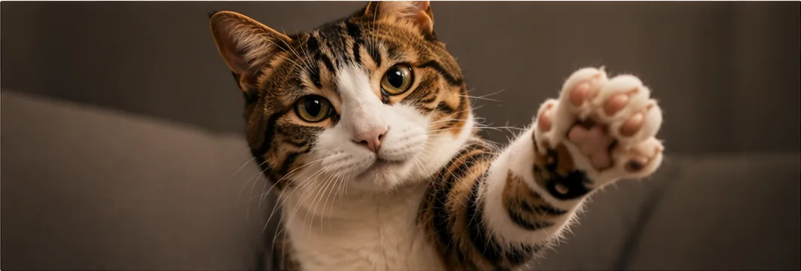
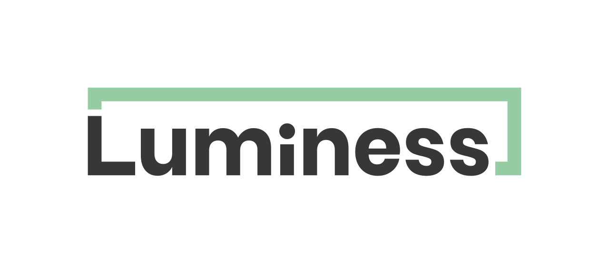
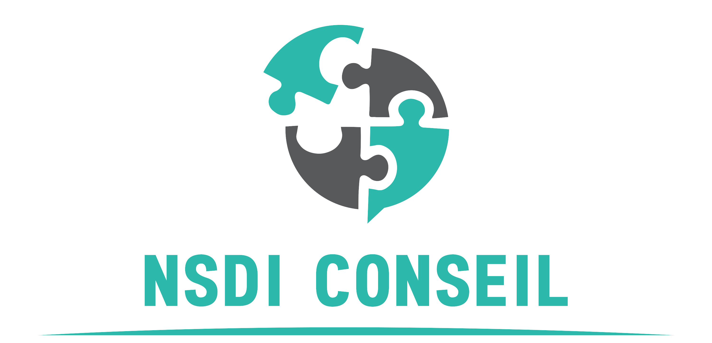
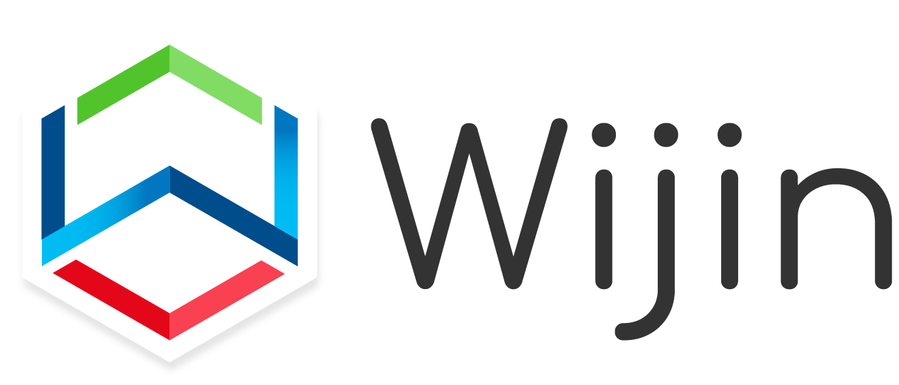

Dix ans de projets tech complexes à faire le glue work quand les équipes cessent de se parler. Ce n'est (presque) jamais le framework qui casse. C'est le feedback qu'on n'ose pas donner.
02/18· Intro·Paradoxe
On demande de parler. Et parfois, on le fait payer.
Scène : - Petite équipe produit. Gros périmètre, specs instables, délai court. L'équipe absorbe, demande du renfort, livre quand même.
- En rétro, les juniors se taisent. Un développeur senior nomme la pression, la capacité intenable, les arbitrages impossibles.
- Quelques mois plus tard, en entretien annuel : « Tu peux être perçu comme négatif. »
Ce qu'on attend
Dire les vrais sujets.
Challenger les arbitrages.
Protéger l'équipe.
Ce qui peut revenir
« Perçu comme négatif. »
« Je te trouve démotivé. »
« Tu contestes l'autorité. »
Comment parler à quelqu'un qui DOIT ensuite t'évaluer ?
03/19· Contexte culturel
Dans ce comparatif, la France ressort.
PDI Power Distance Index
Distance hiérarchique acceptée. À quel point on trouve normal qu'un chef soit un chef.
France
68
Pays-Bas
38
Allemagne
35
USA
40
UAI Uncertainty Avoidance Index
Évitement de l'incertitude. À quel point on a besoin de règles pour se sentir en sécurité.
France
86
Pays-Bas
53
Allemagne
65
USA
46
Autorité touchée.·Conversation incertaine.·Ce n'est pas de la lâcheté. C'est du software culturel.
Scores indicatifs : tendance, pas destin.
1voir bibliographie
04/19· Contexte culturel
On emballe. On espère que ça passe.
En COPIL client
« C'est noté, on va regarder comment l'intégrer au planning… »
→
Ce qu'on pense
« L'équipe est déjà au taquet... Mais c'est un gros client.Il faut préserver la relation. »
En daily
« Je suis encore sur le ticket, ça avance... »
→
Ce qu'on aimerait dire
« Je suis bloqué depuis trois jours, mais je n’ose pas dire que j'ai besoin d'aide. »
En refinement
« Il manque peut-être quelques précisions sur cette story... »
→
En vrai
« Cette story n’est pas prête. Si on la prend en sprint, on va improviser pendant deux semaines. »
Les Français savent critiquer. En évaluation formelle, ils peuvent être très directs. Ici, on parle des rituels informels : quand le silence devient de l'empathie dévastatrice.
Signal au manager, retour sur une pratique, demande d'ajustement.
Tabou · risqué
Dans une culture à forte distance hiérarchique, quelle direction coûte le plus ?
"If you find you cannot be Radically Candid with your boss, I recommend that you consider finding a new job with a new boss.", Kim Scott
06/19· Radical Candor
Deux axes. Quatre réalités.
Se soucier vraiment
↑
Ruinous EmpathyEmpathie dévastatrice
Radical CandorFranchise bienveillante
Manipulative InsincerityDouble-jeu manipulateur
Obnoxious AggressionAgressivité insupportable
Dire les choses directement
→
L'idée centrale
Les meilleurs managers que Kim Scott a croisés avaient deux choses en commun : ils se souciaient vraiment des personnes, et ils leur disaient ce qu'ils pensaient.
Pas l'un ou l'autre. Les deux.
3voir bibliographie
07/19· Les 4 quadrants
Où êtes-vous ?
This is fine. (la maison brûle)
';">
Empathie dévastatrice
Attention ✓· Remise en question ✗
"RAS en daily. (Le burndown est plat depuis trois sprints.)"

chat qui regarde avec bienveillance ET sérieux
';">
Franchise bienveillante
Attention ✓ · Remise en question ✓
"Je me soucie de toi. Et je te dis la vérité."
chat qui regarde ailleurs avec un sourire de façade
';">
Double-jeu manipulateur
Attention ✗ · Remise en question ✗
"Ta présentation était... intéressante."
chat hargneux qui feule
';">
Agressivité insupportable
Attention ✗· Remise en question ✓
"Cette PR est illisible. Tu t'es relu au moins ?"
3voir bibliographie
08/19· Focus
La bienveillance sans franchise n’est pas de la gentillesse. C’est du confort déguisé.
Ce que je me raconte
Mécanisme
Ce que l’autre perd
« Je ne veux pas le blesser. »
silence
Il découvre le problème trop tard.
« Je ne me sens pas légitime. »
coût différé
L’équipe porte le coût en silence.
« Ce n’est pas mon rôle. »
répétition
Il répète le même comportement.
Se taire, c’est confortable pour moi. Rarement utile pour l’autre.
Ce que je me raconte
« Je ne veux pas le blesser. »
« Je ne me sens pas légitime. »
« Ce n’est pas mon rôle. »
Silence
↓
Coût différé
Ce que l’autre perd
Il découvre le problème trop tard.
L’équipe porte le coût.
Il répète le même comportement.
Se taire, c’est confortable pour moi. Rarement utile pour l’autre.
76 %reviews critiques de femmes avec critique de personnalité
2 %équivalent chez les hommes
17 / 0occurrences de « abrasive » (« cassante ») : femmes / hommes
4voir bibliographie
10/19· Ce que ça implique
4
habitudes pour rééquilibrer.
01
Décrire le geste, pas la personne.
"Elle est cassante en réunion."→"Elle a coupé la parole trois fois lors du sprint review."
02
Tester la symétrie avant d'envoyer.
Relire avec le même prénom.→Relire en remplaçant "Marie" par "Marc". Est-ce que ça sonne différemment ?
Si oui, la review parle d'une personne. Pas d'un comportement.
03
Bannir les étiquettes de personnalité.
"Trop émotive." · "Pas assertive."→"Lors du sprint review du 14, elle a quitté la salle avant la clôture."
Un fait daté, un impact observable. Pas un trait de caractère.
04
Relire à deux les évaluations.
Rédiger la review seul·e en 20 min.→Faire relire par un pair avant envoi.
4voir bibliographie
11/19
De la posture aux actes
3
gestes pour commencer demain matin.
12/19 · Geste 01
01
Créer les conditions.
Préparer le terrain avant d'y planter quelque chose.
Timing.
Pas en réunion publique. Pas à chaud. Pas la veille du week-end.
Cadre.
Un endroit neutre. Pas le bureau du manager si c'est ascendant.
Disponibilité.
Vérifier que la personne peut l'entendre maintenant. Sinon, proposer un créneau court.
À dire
"J'ai une observation que j'aimerais partager avec toi - tu es disponible là, ou je repasse plus tard ?"
Variante ascendante
"J’ai un retour sur les changements de périmètre. On peut prendre 10 minutes cette semaine ?"
13/19 · Geste 02
02
Ancrer dans le fait.
Parler de comportements, pas de personnalités.
Étape 01
Fait
Ce que j'ai vu, sans interprétation.
Étape 02
Impact
Ce que ça produit concrètement.
Étape 03
Besoin
Ce que je cherche à préserver.
Étape 04
Demande
Ce que je propose pour la suite.
En pratique · ascendant : managé → manager
“Sur nos trois derniers 1:1, tu es arrivé avec 20 à 30 minutes de retard.
→ Comme on garde la même heure de fin, je n’arrive pas à traiter mes sujets de fond. → J’ai besoin que ce temps soit fiable.
→ Est-ce qu’on peut le sanctuariser, ou le déplacer à un moment où tu es plus disponible ?"
Un bon feedback ressemble à un bon bug report :
Contexte+Reproduction+Impact
6-7voir bibliographie
14/19 · Geste 03
03
Ritualiser pour désacraliser.
Un feedback rare devient un événement. Un feedback régulier devient un outil.
Feedback ponctuel
Un événement.
Anticipation.Anxiété.Dramatisation.
La grande conversation qu'on repousse encore.
→
Feedback ritualisé
Un usage ordinaire.
Prévisible.Normal.Moins menaçant.
Cinq minutes intégrées au flux de travail.
Amy Edmondson · sécurité psychologique
La croyance partagée qu'on peut prendre un risque interpersonnel
- signaler une erreur, exprimer un désaccord -
sans être humilié.
Rituel concret
“Qu’est-ce que j’aurais pu mieux faire cette semaine ?”
Pas de 1:1 ? Pendant une réunion d'équipe ou une rétro qui tourne en rond.
Fréquence bat intensité. Le feedback est un muscle, pas un formulaire annuel.
5voir bibliographie
15/19 · Call to action
Cette semaine.
Identifiez une conversation que vous évitez.
Choisissez le geste : conditions, fait, ou rituel.
N'attendez pas le bon moment. Créez-le !
16/19
"La responsabilité collective se construit aussi dans les conversations qu'on accepte d'avoir."
17/19 · Sponsors·Partenaires
Un grand merci aux sponsors.
Agile Tour Rennes 2026. Sans eux, ni la scène, ni le replay.
Sponsor acteur
Sponsors contributeurs



18/19 · Merci·Q&A
Merci.
Pour ma première conférence, vos questions valent encore plus que mes réponses.